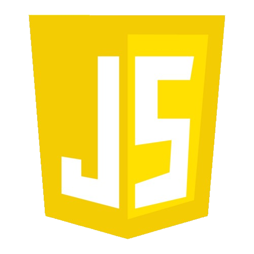
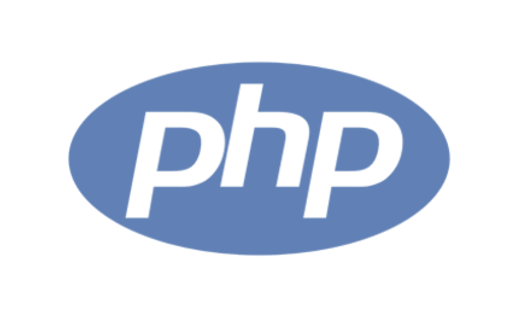

O que é Programação Web?
Programação web é a criação de websites e aplicações para a internet, usando tecnologias como o PHP (linguagem de script do lado do servidor para gerar conteúdo dinâmico) e o JavaScript (linguagem do lado do cliente para interatividade), que se comunicam com bancos de dados como o MySQL (sistema de gerenciamento de banco de dados relacional) para armazenar e recuperar informações
 Java Script
O JavaScript é o que deixa o site interativo. Sabe quando você clica num botão e aparece uma animação? Ou quando abre um quiz divertido direto na página? Isso é JS trabalhando nos bastidores. É tipo o “poder mágico” que transforma um site parado em algo dinâmico e divertido.
 PhP
O PHP cuida do “cérebro” do site. Enquanto o JS funciona mais no navegador (o que você vê), o PHP trabalha no servidor (a parte que você não vê). Quer um exemplo? Quando você faz login em um site. Quando envia um comentário ou mensagem. O PHP é quem organiza tudo isso e manda a resposta certa pro navegador.
 MySql
MySql
Agora imagina que o site precisa guardar informações: usuários cadastrados, pontuação de jogos, lista de produtos… Quem faz esse trabalho é o MySQL, que é um banco de dados. Pensa nele como uma “biblioteca digital” onde tudo fica salvo e pode ser acessado quando precisar.